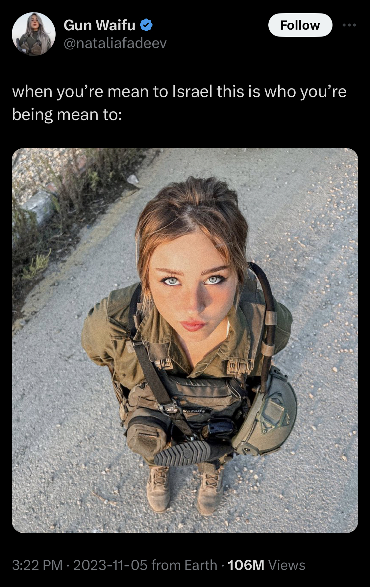
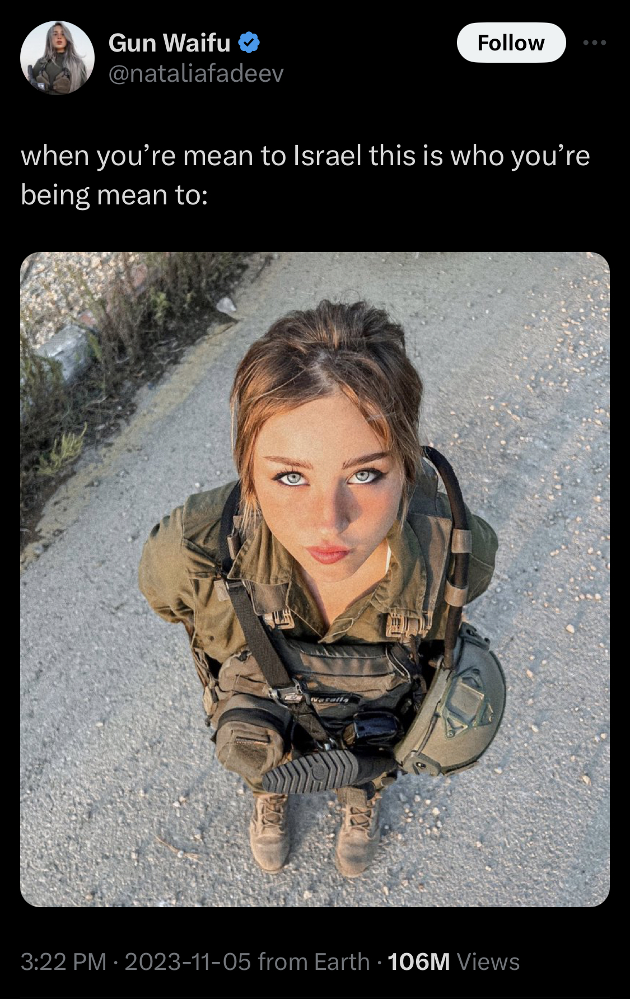

Ancient Propaganda
Propaganda has been around for a long time and the Ancient Greeks, especially Alexander the Great can be credited for the first true use of propaganda. (Or is that Alexander the Great propaganda?) “Propaganda and Persuasion” by Garth Jowett and Victoria O'Donnell discusses the different uses of propaganda in Ancient Greece and how Alexander the Great became the master of it.
The creation of propaganda was for the same purpose it stands for today; demolishing other cultures and ideologies to push one main idea. When Greece began to establish different states after 750 BC, different cultural practices, faiths and ideas were prominent in each. However, differences never sat right with humans in any period of time; resulting in wars between the states.
Though Themistocles is credited for the first use of propaganda through his disinformation campaign targeting Xerxes, it was Alexander the Great that was the first to “openly study the psychology of his enemies” (Jowett and O’Donell 53). He believed that including the people outside of his empire would gain him more trust rather than making them enemies, he used different methods of propaganda to achieve this. An example would be when he married the daughter of a Persian king, this symbolic action went on to reconcile the Greeks and Persians. Other than symbolic propaganda, Alexander the Great also introduced physical forms of propaganda.
Alexander the Great introduced physical forms of propaganda with his commissioned statues, coins, portraits and pottery. He created a new form of currency called “Alexanders” which featured images of different Greek gods and goddesses; naming currency that also featured such important figures made the empire view him as a respectable leader, almost like a god himself. Alexander the Great was also named the son of Zeus and soon replaced the coin with Hercules (the real son of Zeus), with his own image. The statues of himself that he commissioned represented him in a god-like status, making him appear strong, tall and muscular; undefeatable. The different physical propaganda that he used helped him become the legend that he is known as today.
War Propapganda
The most well-known propaganda posters come from WW1 and WW2. Three most important countries in this context would be the United States, Japan and Russia as they have a huge collection of war propaganda posters.
United States
The Uncle Sam poster is an insanely popular piece of propaganda originating in 1917, created to recruit men in the US Army for World War I. It was designed by James Montgomery Flagg, though he cannot be given full credit for the Uncle Sam character. During the War of 1812, packages of meat were shipped off to the US Army with the label “U.S" stamped on. Samuel Wilson, the owner of the meat company, was asked what U.S stood for and answered that it stood for Uncle Sam Wilson. The story then got twisted and everyone began to think that Uncle Sam symbolized the entire U.S government. Therefore, Uncle Sam became a symbol of the country and was drawn in many different ways by cartoonists. Flagg used Uncle Sam on the recruitment poster to draw people in as Uncle Sam was the most American thing at the time, and if you were to not join the US Army, it would mean you were not a true American.
Propaganda posters were used for purposes other than recruitment during WWI. The idea of spies and information being leaked by talking to others about the war was a huge issue, so much so that they had created posters to try and stop this behaviour. Don’t Talk, published by Boston: Walker Lith. & Pub. Co., was one of the posters that circulated. The poster features the head of Wilhelm II the emperor of Germany at the time, as a spider in a large spider web with the words “The web is spun for you with invisible threads” written next to it. The poster is warning citizens to keep quiet as they might get caught in the web of spies and leak information. The use of the realistic head, grim colours and phrases that bring alert are meant to scare people into keeping quiet and helping the country.
Japan
Japanese military commands had established Japanese governments in China during the Sino-Japanese War that took place between 1937-1945. During this period Japan put out a series of posters that would promote cooperation between Japan and China. This poster in particular attacks China’s communist government, the lettering reading “Look at the communist atrocity!”. They claim that the Japanese military will save China from communism, as the smaller text reads “The just Japanese Army liberates people from atrocity and eradicates the evil and selfish Communist Amy and the ruthless Communist Party.” The poster uses imagery of a devil to portray the communist party as evil and controlling of Chinese citizens, while they portray the Japanese soldiers as saviours.

Japan’s propaganda posters during the Sino-Japanese War always pushed the idea of saving China. This poster shows a Japanese soldier on a horse coming from the sky, holding onto the flag that was created to represent Japan and China becoming one. The text reads, “New China leaps forward to a bright future between heaven and earth.” They often used these posters to show that if China cooperated, it would become a paradise led by Japan.
Russia
A tactic that is often used in propaganda posters is dehumanizing the enemy. This Russian Propaganda poster features Kaiser Wilhelm II drawn as a devil. As Russia was against Germany, they wanted to spread the message that the German leader was evil. The text on the poster reads “The Enemy of Humankind”, spreading the message that Kaiser Willhelm II was an enemy to everyone and should not be supported. In addition to the devil reference the poster has a very grim background with darker toned colours; the background seems to be a world in which the German leader rules, appearing lifeless.
Russia faced food shortages throughout the war and struggled to feed its citizens. In an attempt to get Russian citizens to normalize the shortage of food, a series of posters that made food look evil were spread around. In this specific poster, vegetables are shown turning into several enemy figures; by representing food as evil Russian citizens were being convinced that the food, they eat was in fact evil, and they should consume as little of it as possible.
Modern Day Propaganda
Propaganda is still very present in modern times, though it is a little less obvious. Rather than posters, propaganda is extremely present in social media. An example would be the representation of Palestinians in the media and online platforms. Through Instagram posts, Twitter posts, news articles, and talk shows, Palestinians have been wrongfully represented as terrorists. Media is responsible for the portrayal of current events and the deliberate use of words that give the wrong impression to people who read or consume them is dangerous. The lack of media literacy within the mass of people who consume it, is allowing unethical practices to persist.
 

Tweets from the Israel official twitter account, and other Zionists have used disinformation and trends as a tactic to convince people that they are innocent. The first tweet uses the format of a popular twitter trend confronting people who are in support of Palestine, to them its people who are not condemning a terrorist organization. The second tweet shows an IDF soldier holding the LGBTQ+ flag, claiming that it was the first time the flag was held in Gaza, there is no evidence of this. By using the LGBTQ+ community, they are trying to gain support and divert the attention but at the same time are doing this over the rubble of thousands of destroyed Palestinian homes. The third tweet is another example of false claims against Palestinians. This tweet claims that a copy of an antisemitic book was found in a Palestinian child’s bedroom, again there is no clear evidence. The book is also in very good condition, unlikely for a book found in Gaza, where everything has been destroyed. The last tweet is another example of Israel using trends as a form of propaganda. Tweeted by an IDF soldier, this tweet uses the format of another popular Twitter trend. It attempts to make an IDF soldier, an organization that has committed heinous war crimes, look “cute”. By doing this they are deceiving people into thinking that they are innocent, when in reality they are attempting to erase all Palestinians.
From the river to the sea, Palestine will be free.